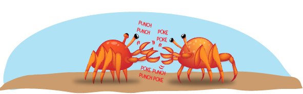
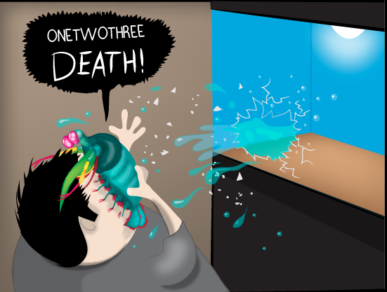

Fatos Interessantes sobre o Stomatopoda
Classificação científica:
| Nome científico | Odontodactylus scyllarus |
|---|---|
| Reino | Animalia |
| Filo | Arthropoda |
| Subfilo | Crustacea |
| Classe | Malacostraca |
| Subclasse | Hoplocarida |
| Ordem | Stomatopoda |
São Sociáveis
São animais que apresentam comportamentos sociais muito variados, desde ameaças visuais contra predadores até comportamentos de côrte.
Podem ser encontrados no Brasil
Estomatópodes podem ser encontrados em quase todo o litoral brasileiro, mas não são animais fáceis de se observar pelos seus hábitos mais furtivos. Devem ser manuseados com muita cautela pois são animais preparados para se defender com força, caso sejam incomodados. Além disso, não são ideais para viverem em aquários, pois abatem quaisquer outros animais que vivem no mesmo local podendo, inclusive, quebrar o vidro do aquário.
São predadores de ótima visão
Os estomatópodes são predadores ativos que caçam presas com o auxílio de um sentido de visão muito apurado e capaz de interpretar polarização no espectro ultravioleta e infravermelho. Esses animais possuem o mais complexo sistema de visão de cores do mundo animal, porque eles podem ver 16 cores primárias, por possuirem 16 pigmentos diferentes em sua retina.

Possui um soco que chega a 80km/h!
O Camarão Mantis esmagador possui dois apêndices bem desenvolvidos (semelhantes a um martelo), chamados de Porretes de Dáctilo. Com essas “super patas” o animal espanca e esmaga suas presas em uma intensidade de aproximadamente 60 kg/cm² (daí o motivo de um de seus nomes ser lagosta-boxeadora).

Referências Bibliográficas
- https://www.youtube.com/watch?v=E0Li1k5hGBE
- https://pt.wikipedia.org/wiki/Stomatopoda
- https://www.nationalgeographic.com/science/article/natures-most-amazing-eyes-just-got-a-bit-weirder
- https://theoatmeal.com/comics/mantis_shrimp
- https://www.aquaa3.com.br/curiosidades-camarao-mantis/